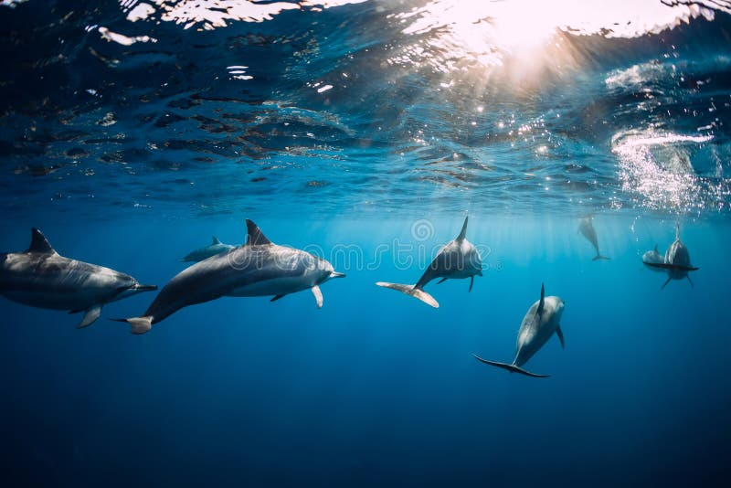
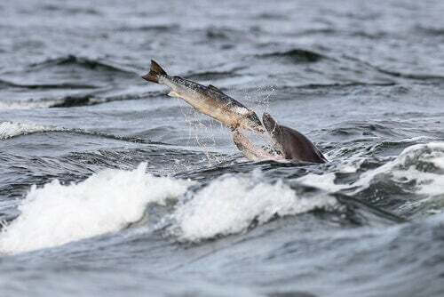
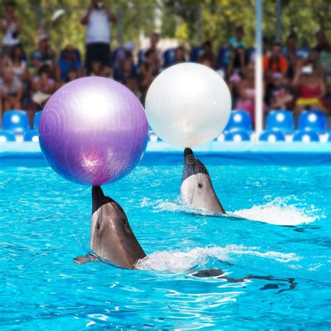
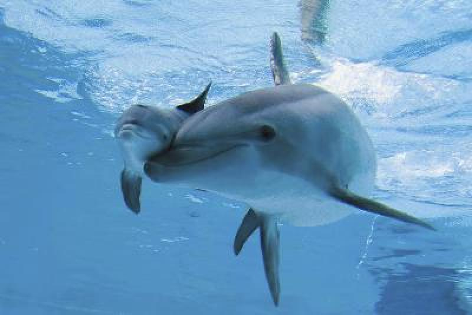

🐬 Il Meraviglioso Mondo dei Delfini 🐬
🌊 Habitat

I delfini vivono negli oceani di tutto il mondo! Li possiamo trovare sia in acque calde che fredde. Alcuni delfini preferiscono vivere vicino alle coste, mentre altri amano il mare aperto.
Lo sapevi? Alcuni delfini possono nuotare fino a 40 km/h!
🐟 Alimentazione

I delfini sono carnivori molto intelligenti! Si nutrono principalmente di:
- Pesci
- Calamari
- Piccoli polpi
Lo sapevi? Un delfino può mangiare fino a 10 kg di pesce al giorno!
🤸 Comportamento

I delfini sono animali molto socievoli e giocherelloni! Vivono in gruppi chiamati "pod" e amano:
- Giocare con le onde
- Saltare fuori dall'acqua
- Comunicare tra loro con fischi e click
Lo sapevi? I delfini dormono con metà cervello sveglio per poter respirare e stare attenti ai pericoli!
👶 Riproduzione

I delfini sono mammiferi, proprio come noi! Questo significa che:
- Le mamme delfino partoriscono un piccolo alla volta
- I piccoli bevono il latte della mamma
- La mamma si prende cura del suo piccolo per 3-6 anni
Lo sapevi? I piccoli di delfino nascono con la coda per prima, così possono subito nuotare!